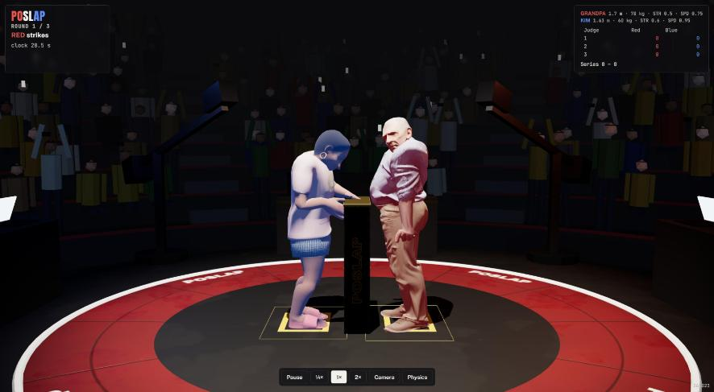

Before: the web version drew the physics shapes (red and blue capsules on a plain mat). After: the Blender arena (crowd, truss, POSLAP mat and podium, taped foot boxes) and the rigged, textured Grandpa and Kim, each bone moved from its MuJoCo body every frame exactly as Unreal's SlapAthleteVisual does (same rest-pose offsets, frame matched on pelvis-to-head and hand-to-hand). The art is compressed for the web (arena 20 to 2.5 MB, Grandpa 37 to 0.6 MB, Kim 22 to 0.3 MB; Kim's GLB newly exported from Content/Art/Raw/Kim_rigged.blend). A Physics button switches back to the shapes view; exposure and fill light raised to suit the darker art.
